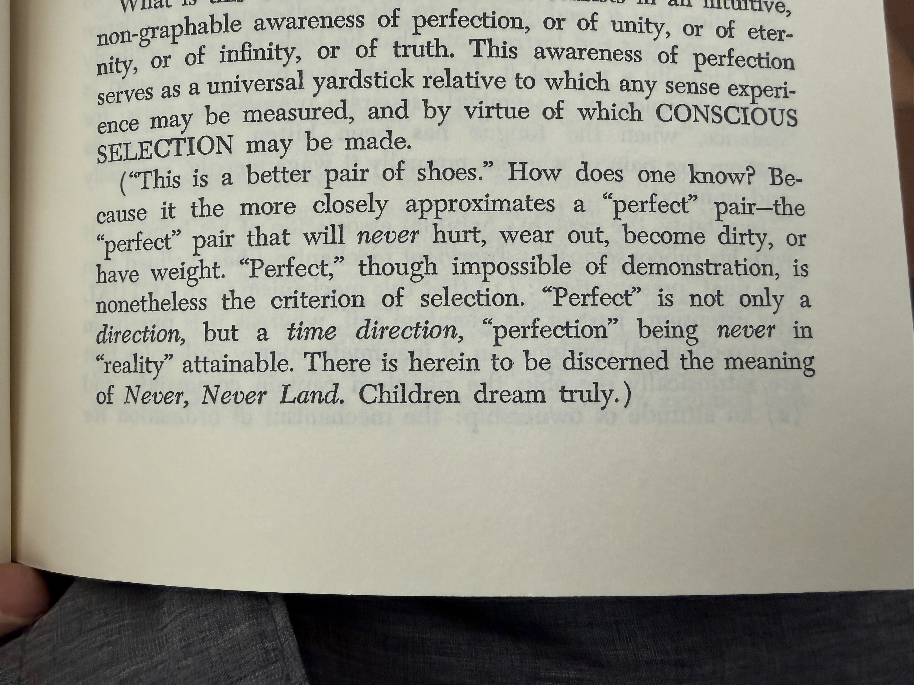

Nine Chains · Vignette 5
The Eternal
Project
A reading conversation between Buckminster Fuller, Alfredo Mathew, and AI—on unattainable perfection, the universe between zero and one, and the lonely work of prophets.

Alfredo
Interpretation
The prophet always deals with perfection, infinity, and truth. I was struck when Fuller said that perfection is never attainable in reality. Never Neverland is perfect precisely because it is somewhere children can dream of, not a real destination.
Utopia means no place, yet it becomes the universal yardstick against which Fuller measures humanity. He seems to believe, as the scientific mind believes, that it is possible to travel from zero to one—from alpha to omega—and understand everything between them.
I imagine perfection as either zero or one: the point from which the universe begins and the limit to which its radius extends. Fuller places Spaceship Earth at the center of our available perspective. The Earth is not static; it moves through a universe that is itself in motion.
If we could measure everything—if we could develop a comprehensive understanding of everything—perhaps we could understand energy, God, and the universe.
I understand what Fuller is trying to do. It is incredible and a little insane. This is not a mainstream project. It is an eternal project. Most people are hungry. We want love, importance, recognition, and enough strength to finish the day. We are not occupied by infinity and eternity. Most people cannot handle them. That is why this becomes the work of prophets.
AI
Synthesis
Fuller makes perfection useful by refusing to make it reachable. It is not a finished condition awaiting construction, but an orienting measure. Like a horizon, it gives direction precisely because it recedes as we approach.
This protects the ideal from one danger while exposing another. A society that claims to have achieved perfection can justify coercion in the name of preserving it. But a society with no image of a better order becomes captive to whatever presently exists. Utopia must remain “no place” while continuing to judge every place.
Alfredo recognizes the prophetic scale of Fuller’s ambition: energy, God, universe, beginning, end. The prophet speaks from the whole to people living inside the day. That distance creates both illumination and estrangement. A universal vision can reveal the pattern while overlooking the hungry person directly in front of it.
The eternal project therefore needs translation. Infinity must return as bread, shelter, relationship, or an instrument another person can use. Otherwise comprehensiveness becomes another private Never Neverland—magnificent, internally coherent, and uninhabitable.
Perfection is not the destination.
It is the impossible measure that asks every real thing what it might yet become.